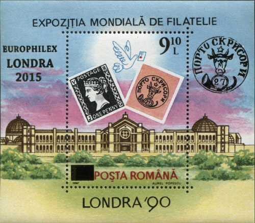
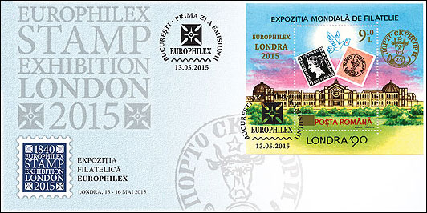
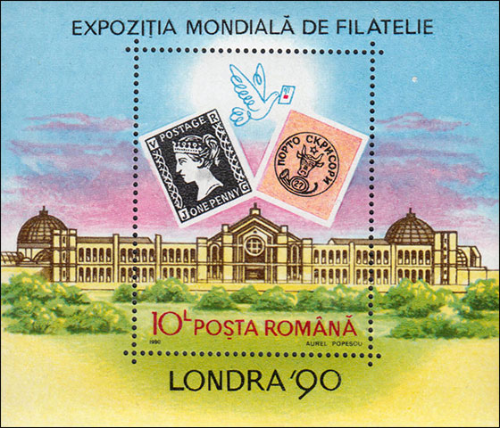
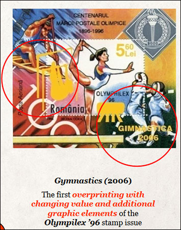
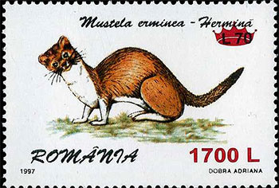
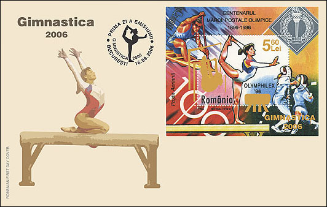
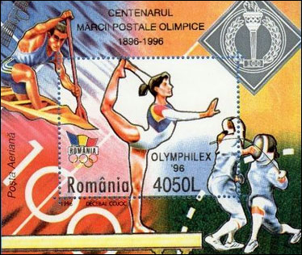

ROMANIAN POSTAL HISTORY REPEATS ITSELF
I've been reading some times ago the WNS website, being interested to learn what news issued the RomanianPostalAdministration. to see what news to take out Romanian mail. It does not took a long time to meet an old acquaintance of mine, but but I found it in a rather bad shape, with two black eyes and a missing teeth in the left corner of the mouth (Fig. 1).
It is about a souvenir sheet (S/S) issued by SC Romfilatelia SA at Europhilex London 2015, which took place at the Business Design Center in Islington, in its central Northern area.

Fig. 1.
I was stricken by the black bar that "censors" the old facial value of 10 Lei on the original sheet, which caused me to visit the Web to find out more about this somewhat appalling appearance. I found that things were somehow better, as shown in Fig. 2, on which the same sheet appears, this time used on the first day (FDC) of the EUROPHILEX LONDON 2015 issue.

Fig. 2
Since the true color of the overprint is golden, the changes to the original design appear less strident. Of course, one can ask why Romfilatelia sent to WNS (WADP Numbering System, www.wnsstamps.post) a picture that does not reflect the reality. I ignore the answer to this legitimate question.
I remember that I had the opportunity to see for the first time the original of the S/S at the LONDON '90 World Exhibition, at the boot of the Romanian Post in this memorable exhibition (Fig.3).

Fig. 3
The designer Aurel Popescu did something interesting 25 years ago, bringing together the anniversary stamp, known as Penny Black, the first postage stamp in the world, and Moldavian Bull's Heads, the first Romanian postage stamp. In the background you can see, in a carefully arranged setting, Alexandra Palace, the building in which the unforgettable exhibition was held for all those who had the opportunity to visit it. The design is neat and well balanced, containing key philatelic elements.
Let us return, however, to the central subject of this article, namely the S/S put on the market on May 13, 2015, with the subject declared on WNS as "Europhilex Stamp Exhibition London 2015", a sheet issued by SC Romfilatelia SA and overprinted by the Romanian Stamps Printing House.
From philatelica.ro No. 2 (37), April - June 2015, p. 17 we find out that the designer of this version of the sheet was the same Aurel Popescu, that it is an "overprint with folio applied gold," and that the print run of the sheet was of 2,300 copies.
I would like to note that the name of the issuing country, "ROMANIA", does not appear on this S/S, as it appears on the current issues and as it is stated on the WNS website. The probable reason is that the bar that covers the text "10 L" should have extended beyond the text "ROMANIAN POST", which would have made it monstrous. Additionally, there is no place to put the missing text "ROMANIA" without completely destroying the original design .
A rapid comparison of the 2015 S/S with the one of 1990 makes obvious that it is something done fast and dirty. Even in gold, the overprint overloads the original design and adds the bar that is extremely disagreeable.
The overprint "EUROPHILEX LONDRA 2015" (it is not obvious that this is a later overprint) and the large text "London 90" from the original tell different years, what is misleading. Keeping "1990" under the gold bar is an additional element that can lead to confusion.
Obviously, we are dealing here with a new finding of "smart boys" in philately, who have, on the one hand, avoided the work of preparing and produce in time a major issue, and on the other hand use "creatively" the stock of unsold material, that lays for 25 years and waits for its time to come. What was then simpler than to use an overprinting technique, though it was not an event that occurred unexpectedly and beyond any possible prediction! We can ask ourselves how many other unsold stamps are waiting for their moment of glory in the reserves of Romfilatelia SA, waiting to be "creatively" used too.
As expected, among the traders present at the exhibition, according to the London 2015 exhibition site, were "Romfilatelia - Romanian Post" ...
I can not fail to notice the similarity between this overprinted S/S and the Romanian Post "Universal Exhibition Brussels" in 1958, about which I have written extensively on this site. The striking resemblance between the way in which the material was prepared sold in both exhibitions explains the title of this article.
UPDATE 2016
On June 2, 2016, Cristina Popescu, CEO of Romfilatelia, participated in the Philatelic Forum "Innovation and Cooperation between Postal Operators, Printers and All Players of the Market". It was held at the World Stamp Show NY 2016.
Mrs. Popescu's presentation was entitled "Innovative stamps and products as Romanian symbols". Here is a short extract (Figure 5) from this presentation, which you find complete here:

Fig. 4
The innovation consisted in overprinting OLYMPHILEX '96 S/S, unsold for 10 years and kept intact by Romfilatelia. We present it below (Figure 6), to remind this already heavily overloaded S/S, which celebrated the centenary of some foreign stamps that were not issued/printed by the Romanian postal administration.

The assertion about "the first overprinting with changing value and additional graphic elements" is contradicted by what was done above, in the year 2000, by the same Romanian P.A., this being just one of many examples. The red royal crown overprints the old value and the new one is overprinted in the bottom right corner.

Fig. 5. The S/S of 1996, "enhanced" in 2006, on a FDC
This explains the image in the upper right corner, which has nothing to do with the interesting and sought-after commemorative stamps issued in 1896 by Greek post. The fist received in the mask by the fencer that faces us emphasizes the hilarious aspect of this sheet. The fact that the stamp was not postmarked on the First Day Cover is a rules breaking mistake of the Romanian Post.

Fig. 6. The original S/S of 1996
Thus, through the same marketing process, and with little effort, Romfilatelia "continuously enriches" the Romanian philately, and brags before an international audience about its "innovative" creativity and spirit.